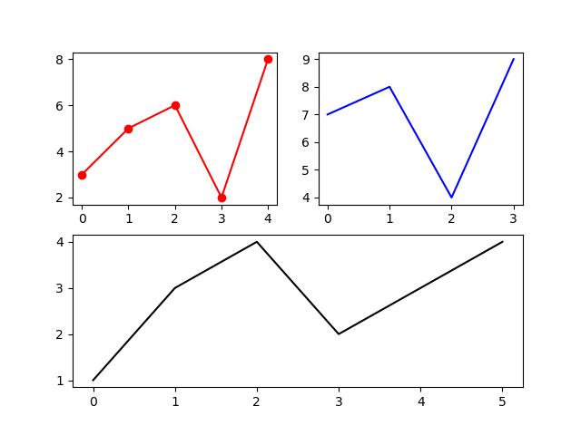

Gavin Wiggins
Gavin Wiggins
Mosaic Grid of Plots with Matplotlib
Written on February 4, 2023
Example of using Matplotlib subplot_mosaic() to create a grid of plots.
import matplotlib.pyplot as plt
_, ax = plt.subplot_mosaic([['one', 'two'],
['three', 'three']])
ax['one'].plot([3, 5, 6, 2, 8], '-o', color='red')
ax['two'].plot([7, 8, 4, 9], color='blue')
ax['three'].plot([1, 3, 4, 2, 3, 4], color='black')
plt.show()

Gavin Wiggins © 2025.
Made on a Mac with Genja. Hosted on GitHub Pages.